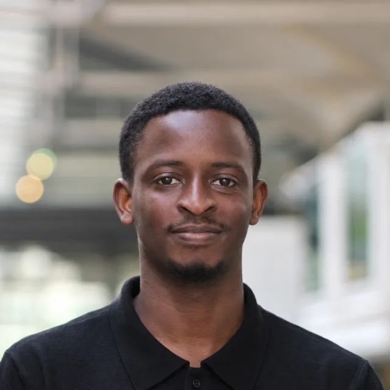
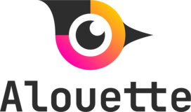
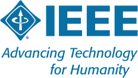
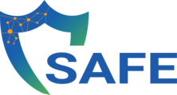
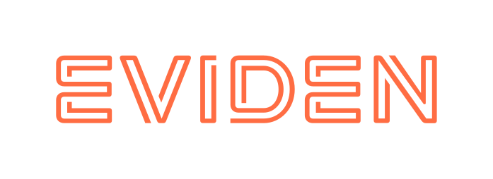
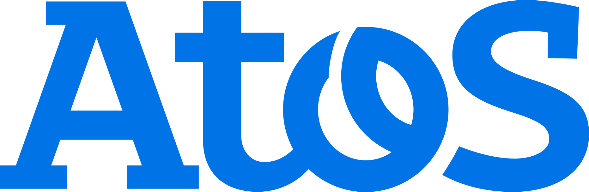
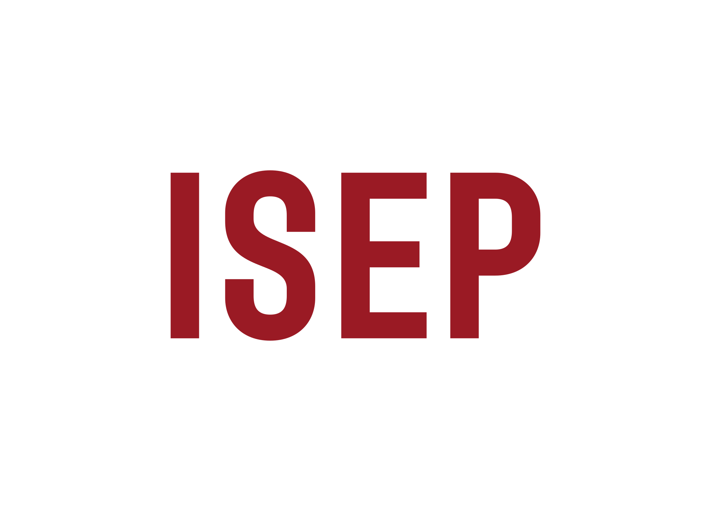
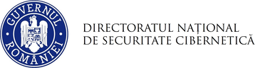
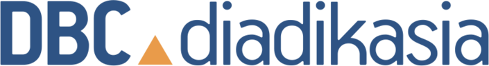
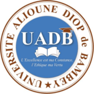

<title>Portfolio Arona Fall</title>
<meta name="claude:viewport-fit-sides" content="cover">
<link rel="preconnect" href="https://fonts.googleapis.com">
<link rel="preconnect" href="https://fonts.gstatic.com" crossorigin>
<link href="https://fonts.googleapis.com/css2?family=Schibsted+Grotesk:wght@400..800&family=Spline+Sans+Mono:wght@400;500&display=swap" rel="stylesheet">
<style>
/* Layout: left-aligned 12-col editorial grid; one bold element (EARS statement traced to research domains), everything else quiet. */
:root{
  --paper:#F3F5F4; --paper-2:#E9EDEC; --ink:#16202C; --graphite:#5A6472; --rule:#CDD3D6; --trace:#A3195B; --on-ink:#F3F5F4;
  --sans:"Schibsted Grotesk",system-ui,-apple-system,"Segoe UI",sans-serif; --mono:"Spline Sans Mono",ui-monospace,Menlo,monospace;
  --s0:15px; --s1:18.75px; --s2:23.4px; --s3:29.3px; --s4:36.6px;
  --gutter:clamp(16px,4vw,56px); --logo-filter:grayscale(1); --logo-op:.72;
}
@media (prefers-color-scheme:dark){:root:not([data-theme="light"]){
  --paper:#0F1722; --paper-2:#152030; --ink:#E6EAEF; --graphite:#98A2B0; --rule:#2A3442; --trace:#E2508F; --on-ink:#0F1722;
  --logo-filter:grayscale(1) invert(1) brightness(1.5); --logo-op:.62; color-scheme:dark;
}}
:root[data-theme="dark"]{
  --paper:#0F1722; --paper-2:#152030; --ink:#E6EAEF; --graphite:#98A2B0; --rule:#2A3442; --trace:#E2508F; --on-ink:#0F1722;
  --logo-filter:grayscale(1) invert(1) brightness(1.5); --logo-op:.62; color-scheme:dark;
}
:root:not([data-lang="en"]) .en,:root[data-lang="en"] .fr{display:none !important}
*{box-sizing:border-box}
body{margin:0;background:var(--paper);color:var(--ink);font:400 18px/1.55 var(--sans)}
a{color:inherit;text-underline-offset:3px}
img{max-width:100%}
:focus-visible{outline:2px solid var(--trace);outline-offset:3px}
h1,h2,h3{text-wrap:balance}
.wrap{max-width:1240px;margin:0 auto;padding-left:max(var(--gutter),env(safe-area-inset-left,0px));padding-right:max(var(--gutter),env(safe-area-inset-right,0px))}
.muted{color:var(--graphite)}
.mono{font-family:var(--mono)}

/* header */
header.top{border-bottom:1px solid var(--rule);position:sticky;top:env(safe-area-inset-top,0px);background:var(--paper);z-index:20}
body::before{content:"";position:fixed;inset:0 0 auto;height:env(safe-area-inset-top,0px);z-index:21;background:var(--paper)}
.nav{display:flex;align-items:center;gap:28px;min-height:64px}
.wordmark{font-weight:700;font-size:var(--s1);letter-spacing:-.01em;text-decoration:none;margin-right:auto}
.nav ul{display:flex;gap:24px;list-style:none;margin:0;padding:0;font-size:var(--s0)}
.nav ul a{text-decoration:none;color:var(--graphite);padding:6px 0;border-bottom:1.5px solid transparent}
.nav ul a:hover{color:var(--ink)}
.nav ul a[aria-current="page"]{color:var(--ink);border-bottom-color:var(--trace)}
.nav ul .soon{font-size:12px;color:var(--graphite);margin-left:4px}
.tools{display:flex;gap:8px}
.tool{font:500 14px var(--sans);color:var(--ink);background:none;border:1px solid var(--rule);min-height:36px;padding:0 12px;cursor:pointer}
.tool:hover{border-color:var(--ink)}
.menu-btn{display:none}

main{min-height:70vh}
.page{padding-block:0 96px}
.page-head{padding-block:64px 32px;border-bottom:1px solid var(--rule);margin-bottom:48px}
.page-head h1{font-size:clamp(34px,4.4vw,52px);font-weight:600;letter-spacing:-.022em;line-height:1.08;margin:0 0 14px;max-width:22ch}
.page-head p{margin:0;max-width:62ch;color:var(--graphite);font-size:var(--s1)}
h2.sec{font-size:var(--s3);font-weight:600;letter-spacing:-.012em;margin:0 0 20px}
.section{margin-bottom:64px}

/* hero */
/* ambient knowledge graph behind the hero (canvas, decorative) */
.page[data-page="home"]{position:relative}
canvas.kg{position:absolute;left:0;top:0;width:100%;pointer-events:none;z-index:0;
  -webkit-mask-image:radial-gradient(ellipse 90% 75% at 62% 30%,#000 40%,transparent 95%),linear-gradient(to bottom,#000 0,#000 42%,rgba(0,0,0,.22) 62%,transparent 92%);
  -webkit-mask-composite:source-in;
          mask-image:radial-gradient(ellipse 90% 75% at 62% 30%,#000 40%,transparent 95%),linear-gradient(to bottom,#000 0,#000 42%,rgba(0,0,0,.22) 62%,transparent 92%);
          mask-composite:intersect}
.hero{z-index:1}
.hero{position:relative;display:grid;grid-template-columns:minmax(0,7fr) minmax(0,5fr);gap:72px;padding-block:72px 64px;align-items:center}
.ears{font-weight:500;font-size:clamp(32px,4vw,50px);line-height:1.12;letter-spacing:-.022em;margin:0}
.ears b{font-weight:750}
.ears .resp{text-decoration:underline;text-decoration-color:var(--trace);text-decoration-thickness:2px;text-underline-offset:.16em}
.domains{position:relative;z-index:1}
.domains h2{font-size:var(--s0);font-weight:500;color:var(--graphite);margin:0 0 12px}
.domains ol{list-style:none;margin:0;padding:0;display:grid;gap:10px}
.dom{display:block;width:100%;text-align:left;font:inherit;color:inherit;background:var(--paper);border:1px solid var(--rule);padding:12px 16px;cursor:pointer;text-decoration:none;transition:border-color .15s}
.dom strong{display:block;font-weight:600;font-size:16.5px;line-height:1.3}
.dom span{display:block;font-size:14px;color:var(--graphite);line-height:1.4;margin-top:2px}
.dom:hover,.dom:focus-visible,.dom.on{border-color:var(--trace)}
svg.traces{position:absolute;inset:0;width:100%;height:100%;pointer-events:none;overflow:visible}
svg.traces path{fill:none;stroke:color-mix(in srgb,var(--trace) 40%,var(--paper));stroke-width:1.5;transition:stroke .15s,stroke-width .15s}
svg.traces path.on{stroke:var(--trace);stroke-width:2.25}
svg.traces circle{fill:var(--trace)}
@media (prefers-reduced-motion:no-preference){
  svg.draw path{stroke-dasharray:var(--len);stroke-dashoffset:var(--len);animation:draw .9s cubic-bezier(.2,.7,.2,1) forwards;animation-delay:var(--d)}
}
@keyframes draw{to{stroke-dashoffset:0}}

.intro{position:relative;z-index:1;display:grid;grid-template-columns:minmax(200px,260px) minmax(0,1fr);gap:56px;align-items:center;padding-block:8px 64px}
.id-card{margin:0;position:relative}
.id-card .frame{position:relative;padding:10px;border:1px solid var(--rule);background:var(--paper)}
.id-card .frame::before,.id-card .frame::after{content:"";position:absolute;width:14px;height:14px;border-color:var(--trace);border-style:solid}
.id-card .frame::before{top:-1px;left:-1px;border-width:2px 0 0 2px}
.id-card .frame::after{bottom:-1px;right:-1px;border-width:0 2px 2px 0}
.portrait{display:block;width:100%;height:auto;aspect-ratio:4/5;object-fit:cover;object-position:50% 30%;filter:saturate(.9)}
.id-card figcaption{display:grid;gap:2px;padding-top:12px}
.id-card figcaption strong{font-size:var(--s1);font-weight:650}
.id-card figcaption span{font-size:15px;color:var(--graphite)}
.open{margin:4px 0 20px;font-size:16px;max-width:62ch}
.open b{display:inline-flex;align-items:center;gap:8px;font-weight:600;margin-right:8px}
.open b::before{content:"";width:8px;height:8px;border-radius:50%;background:var(--trace)}
.open span{color:var(--graphite)}
@media (max-width:860px){.intro{grid-template-columns:1fr;gap:28px}.id-card{max-width:260px}}
.intro p{margin:0 0 16px;max-width:62ch}
.intro .lede{font-size:var(--s2);line-height:1.4;letter-spacing:-.01em}
.actions{display:flex;flex-wrap:wrap;gap:12px;margin-top:24px}
.btn{display:inline-flex;align-items:center;min-height:44px;padding:0 18px;border:1px solid var(--ink);text-decoration:none;font:600 16px var(--sans);color:var(--ink);background:none;cursor:pointer}
.btn.primary{background:var(--ink);color:var(--on-ink)}
.btn:hover{border-color:var(--trace)}
.btn.primary:hover{background:var(--trace);border-color:var(--trace);color:#fff}
.links{display:flex;flex-wrap:wrap;gap:8px 18px;margin-top:20px;font-size:var(--s0);color:var(--graphite)}
.links a{text-decoration-color:var(--rule)}

.affil{border-block:1px solid var(--rule);padding-block:26px}
.affil .row{display:flex;flex-wrap:wrap;align-items:center;gap:20px 40px}
.affil p{margin:0;font-size:var(--s0);color:var(--graphite)}
.logo{display:flex;align-items:center;gap:10px;font-size:14px;color:var(--graphite);text-decoration:none}
.logo img{height:var(--h,30px);width:auto;filter:var(--logo-filter);opacity:var(--logo-op);transition:filter .2s,opacity .2s}
.logo:hover img{filter:none;opacity:1}

.featured{padding-block:64px 0}
.feat-grid{display:grid;grid-template-columns:repeat(3,minmax(0,1fr));gap:20px}
.feat{border-top:1.5px solid var(--ink);padding-top:16px}
.feat h3{font-size:var(--s1);font-weight:650;margin:6px 0 6px}
.feat p{margin:0;font-size:16px;color:var(--graphite)}
.kind{font-size:13px;color:var(--graphite)}
.sec-lede{margin:-8px 0 8px;max-width:62ch;color:var(--graphite)}
.flow{list-style:none;margin:28px 0 0;padding:0;display:grid;grid-template-columns:repeat(4,minmax(0,1fr));gap:36px}
.flow li{position:relative;border:1px solid var(--rule);background:var(--paper);padding:16px 18px 20px}
.flow li + li::before{content:"";position:absolute;top:50%;left:-37px;width:30px;border-top:1.5px solid var(--graphite)}
.flow li + li::after{content:"";position:absolute;top:calc(50% - 4.25px);left:-8px;border:5px solid transparent;border-left:7px solid var(--graphite);border-right:0}
.flow li:last-child{border-color:var(--trace)}
.flow .who{display:flex;gap:8px;align-items:baseline;font-size:13px;color:var(--graphite);margin-bottom:10px}
.flow .n{font:500 13px var(--mono)}
.flow li:last-child .who{color:var(--trace)}
.flow h3{margin:0 0 6px;font-size:var(--s1);font-weight:650}
.flow p{margin:0;font-size:16px;color:var(--graphite)}
.offer{display:grid;grid-template-columns:repeat(2,minmax(0,1fr));margin-top:28px;border-top:1px solid var(--rule);border-left:1px solid var(--rule)}
.offer article{border-right:1px solid var(--rule);border-bottom:1px solid var(--rule);padding:24px 28px;display:flex;flex-direction:column;gap:8px}
.offer h3{margin:0;font-size:var(--s1);font-weight:650}
.offer p{margin:0;font-size:16px;color:var(--graphite);max-width:56ch}
.offer .deliv{margin-top:auto;padding-top:8px;color:var(--ink);font-size:15px;display:flex;flex-wrap:wrap;gap:4px 10px}
.offer .deliv b{font-weight:600;color:var(--graphite)}
.record{list-style:none;margin:28px 0 0;padding:0}
.record li{display:grid;grid-template-columns:minmax(0,240px) minmax(0,1fr) minmax(0,180px);gap:12px 40px;padding:20px 0;border-top:1px solid var(--rule);align-items:baseline}
.record li:last-child{border-bottom:1px solid var(--rule)}
.record h3{margin:0;font-size:var(--s1);font-weight:650}
.record p{margin:0;font-size:16px;color:var(--graphite);max-width:62ch}
.record .rcpt{display:grid;gap:0;text-align:right;color:var(--graphite);font-size:14px;line-height:1.35}
.record .rcpt b{font-size:var(--s2);font-weight:600;color:var(--ink);letter-spacing:-.01em;font-variant-numeric:tabular-nums}
.pub-link{display:grid;gap:4px;padding:20px 0;border-top:1.5px solid var(--ink);border-bottom:1px solid var(--rule);text-decoration:none;color:var(--ink);max-width:880px}
.pub-link .venue{font-size:14px;color:var(--graphite)}
.pub-link .t{font-size:var(--s2);font-weight:600;letter-spacing:-.01em;line-height:1.25}
.pub-link:hover .t{text-decoration:underline;text-decoration-color:var(--trace);text-underline-offset:4px}
.pub-link .authors{font-size:16px;color:var(--graphite)}
.proj .lbl{display:block;font-size:13px;font-weight:600;color:var(--graphite);margin-bottom:2px}
@media (max-width:960px){
  .flow{grid-template-columns:1fr;gap:28px}
  .flow li + li::before{top:-29px;left:28px;width:0;height:22px;border-top:0;border-left:1.5px solid var(--graphite)}
  .flow li + li::after{top:-8px;left:24px;border:5px solid transparent;border-top:7px solid var(--graphite);border-bottom:0}
  .record li{grid-template-columns:minmax(0,1fr) auto}
  .record li p:not(.rcpt){grid-column:1/-1;grid-row:2}
}
@media (max-width:720px){.offer{grid-template-columns:1fr}.offer article{padding:20px}}
.page-head .head-actions{margin-top:20px}
.more{display:inline-block;margin-top:24px;font-weight:600}

/* research */
.question{font-size:clamp(24px,2.6vw,32px);line-height:1.3;letter-spacing:-.012em;font-weight:500;max-width:34ch;margin:0 0 20px}
dl.meta{display:grid;grid-template-columns:max-content 1fr;gap:6px 24px;margin:0;font-size:16px}
dl.meta dt{color:var(--graphite)}
dl.meta dd{margin:0}
.steps{list-style:none;margin:0;padding:0;counter-reset:s;display:grid;gap:0}
.steps li{counter-increment:s;display:grid;grid-template-columns:48px minmax(0,1fr);gap:16px;padding:20px 0;border-top:1px solid var(--rule)}
.steps li::before{content:counter(s);font:500 14px/1.9 var(--mono);color:var(--graphite)}
.steps li.now::before{color:var(--trace)}
.steps h3{margin:0 0 4px;font-size:var(--s1);font-weight:650}
.steps p{margin:0;max-width:66ch;color:var(--graphite)}
.dom-grid{display:grid;grid-template-columns:repeat(2,minmax(0,1fr));gap:20px}
.dom-card{border:1px solid var(--rule);padding:20px;scroll-margin-top:96px;transition:border-color .3s}
.dom-card.flash{border-color:var(--trace)}
.dom-card h3{margin:0 0 8px;font-size:var(--s1);font-weight:650}
.dom-card p{margin:0;font-size:16px;color:var(--graphite)}
.pub{border:1px solid var(--rule);padding:22px}
.pub .venue{font-size:14px;color:var(--graphite)}
.pub h3{margin:6px 0 8px;font-size:var(--s2);font-weight:600;line-height:1.25;letter-spacing:-.01em}
.pub .authors{margin:0 0 12px;font-size:16px}
.pub .row{display:flex;flex-wrap:wrap;gap:12px;align-items:center}
.pub pre{margin:16px 0 0;padding:14px;background:var(--paper-2);overflow-x:auto;font:400 13px/1.55 var(--mono);white-space:pre}
.copied{font-size:14px;color:var(--trace)}

/* projects */
.filters{display:flex;flex-wrap:wrap;gap:8px;margin-bottom:28px}
.chip{font:500 15px var(--sans);color:var(--ink);background:none;border:1px solid var(--rule);min-height:38px;padding:0 14px;cursor:pointer}
.chip[aria-pressed="true"]{background:var(--ink);color:var(--on-ink);border-color:var(--ink)}
.proj-grid{display:grid;grid-template-columns:repeat(2,minmax(0,1fr));gap:16px;align-items:start}
.proj{border:1px solid var(--rule);background:var(--paper)}
.proj summary{list-style:none;cursor:pointer;padding:18px 20px;display:grid;gap:4px}
.proj summary::-webkit-details-marker{display:none}
.proj summary:hover{background:var(--paper-2)}
.proj[open]{border-color:var(--ink)}
.proj .top{display:flex;justify-content:space-between;gap:12px;font-size:13px;color:var(--graphite)}
.proj .plus{font:500 16px var(--mono);color:var(--graphite);transition:transform .2s}
.proj[open] .plus{transform:rotate(45deg);color:var(--trace)}
.proj h3{margin:0;font-size:var(--s1);font-weight:650}
.proj .one{margin:0;font-size:16px;color:var(--graphite)}
.proj .body{padding:0 20px 20px;font-size:16px}
.proj .body p{margin:0 0 10px}
.tags{display:flex;flex-wrap:wrap;gap:6px;list-style:none;margin:10px 0 0;padding:0}
.tags li{font-size:13px;padding:2px 8px;background:var(--paper-2)}
.empty{color:var(--graphite)}

/* experience */
.xp{display:grid;grid-template-columns:200px minmax(0,1fr);gap:32px;padding:28px 0;border-top:1px solid var(--rule)}
.xp .when{font:500 14px/1.6 var(--mono);color:var(--graphite)}
.xp .org{display:flex;align-items:center;gap:12px;margin-top:10px}
.xp .org img{height:28px;width:auto;filter:var(--logo-filter);opacity:var(--logo-op)}
.xp h3{margin:0;font-size:var(--s2);font-weight:600;letter-spacing:-.01em;line-height:1.25}
.xp .where{margin:4px 0 12px;color:var(--graphite);font-size:16px}
.xp .ctx{margin:0 0 12px;max-width:68ch}
.xp ul.acts{margin:0;padding-left:18px;max-width:68ch}
.xp ul.acts li{margin-bottom:6px}
.badge{display:inline-block;font-size:13.5px;font-weight:600;border:1px solid var(--trace);color:var(--trace);padding:2px 8px;margin:0 0 12px}
.partners{display:flex;flex-wrap:wrap;align-items:center;gap:14px 26px;margin-top:16px;padding-top:16px;border-top:1px dashed var(--rule)}
.partners img{height:24px;width:auto;filter:var(--logo-filter);opacity:var(--logo-op)}
.partners .eu img{height:30px}
details.fold{border-top:1px solid var(--rule);padding:16px 0}
details.fold summary{cursor:pointer;font-weight:650;font-size:var(--s1)}
.edu{list-style:none;margin:16px 0 0;padding:0;display:grid;gap:14px}
.edu li{display:grid;grid-template-columns:200px minmax(0,1fr);gap:32px}
.skills{display:grid;grid-template-columns:repeat(2,minmax(0,1fr));gap:20px;margin-top:16px}
.skills h4{margin:0 0 4px;font-size:16px}
.skills p{margin:0;font-size:15.5px;color:var(--graphite)}

/* blog + contact */
.soon-box{border:1px dashed var(--rule);padding:32px;max-width:640px}
.soon-box p{margin:0 0 8px}
.contact{display:grid;grid-template-columns:minmax(0,7fr) minmax(0,5fr);gap:56px}
form{display:grid;gap:16px;max-width:560px}
label{display:grid;gap:6px;font-weight:600;font-size:15px}
input,textarea{font:400 16px var(--sans);color:var(--ink);background:var(--paper);border:1px solid var(--rule);padding:10px 12px}
input:focus,textarea:focus{border-color:var(--ink);outline:none}
textarea{min-height:140px;resize:vertical}
.notice{border-left:2px solid var(--trace);padding:6px 12px;font-size:15px}
.side-links{list-style:none;margin:0;padding:0;display:grid;gap:12px}
.side-links a{font-weight:600}
.side-links span{display:block;font-size:14px;color:var(--graphite)}
footer{border-top:1px solid var(--rule);padding-block:24px;font-size:14px;color:var(--graphite)}

@media (max-width:960px){
  .hero{grid-template-columns:1fr;gap:36px;padding-top:48px}
  svg.traces{display:none}
  .domains ol{border-left:2px solid var(--trace);padding-left:14px}
  .feat-grid,.proj-grid,.dom-grid,.skills,.contact{grid-template-columns:1fr}
  .xp,.edu li{grid-template-columns:1fr;gap:8px}
  .menu-btn{display:inline-flex;align-items:center}
  .nav{flex-wrap:wrap}
  .nav nav{order:5;width:100%;display:none;padding-bottom:12px}
  .nav.open nav{display:block}
  .nav ul{flex-direction:column;gap:4px}
}
@media (max-width:520px){ .tool{padding:0 9px} }
</style>

<header class="top"><div class="wrap nav" id="nav">
  <a class="wordmark" href="#home">Arona Fall</a>
  <nav aria-label="Navigation"><ul>
    <li><a href="#research" data-route="research"><span class="fr">Recherche</span><span class="en">Research</span></a></li>
    <li><a href="#projects" data-route="projects"><span class="fr">Projets</span><span class="en">Projects</span></a></li>
    <li><a href="#experience" data-route="experience"><span class="fr">Expériences</span><span class="en">Experience</span></a></li>
    <li><a href="#blog" data-route="blog">Blog<span class="soon"><span class="fr">à venir</span><span class="en">soon</span></span></a></li>
    <li><a href="#contact" data-route="contact">Contact</a></li>
  </ul></nav>
  <div class="tools">
    <button class="tool" id="lang-btn" type="button" aria-label="Changer de langue / Switch language">EN</button>
    <button class="tool" id="theme-btn" type="button"></button>
    <button class="tool menu-btn" id="menu-btn" type="button" aria-expanded="false" aria-controls="nav">Menu</button>
  </div>
</div></header>

<main>
<!-- ============ HOME ============ -->
<section class="page" data-page="home">
  <canvas class="kg" id="kg" aria-hidden="true"></canvas>
  <div class="wrap hero" id="hero">
    <h1 class="ears">
      <span class="fr"><b>Pendant</b> tout le cycle de vie d'un système cyber-physique, les agents IA que je conçois <span class="resp"><b>doivent</b> rendre le MBSE adoptable, avec des méthodes aussi sûres que l'exige l'ingénierie système.</span></span>
      <span class="en"><b>While</b> a cyber-physical system moves through its life cycle, the AI agents I design <span class="resp"><b>shall</b> make MBSE adoptable, with methods as safe as systems engineering demands.</span></span>
    </h1>
    <aside class="domains" aria-labelledby="dom-title">
      <h2 id="dom-title"><span class="fr">Domaines de recherche</span><span class="en">Research areas</span></h2>
      <ol>
        <li><a class="dom" href="#research" data-target="d-req"><strong><span class="fr">Exigences assistées par IA</span><span class="en">AI-assisted requirements</span></strong><span><span class="fr">Extraire et éliciter des exigences traçables</span><span class="en">Extracting and eliciting traceable requirements</span></span></a></li>
        <li><a class="dom" href="#research" data-target="d-model"><strong><span class="fr">Modélisation ARCADIA / Capella</span><span class="en">ARCADIA / Capella modelling</span></strong><span><span class="fr">Architecture des systèmes, des besoins au physique</span><span class="en">System architecture, from needs to physical design</span></span></a></li>
        <li><a class="dom" href="#research" data-target="d-evo"><strong><span class="fr">Évolution contrôlée des modèles</span><span class="en">Controlled model evolution</span></strong><span><span class="fr">L'IA propose, des mécanismes vérifiables décident</span><span class="en">AI proposes, verifiable mechanisms decide</span></span></a></li>
        <li><a class="dom" href="#research" data-target="d-agents"><strong><span class="fr">Agents IA et graphes de connaissances</span><span class="en">AI agents and knowledge graphs</span></strong><span><span class="fr">Multi-agents, RAG, GraphRAG, modèles locaux</span><span class="en">Multi-agent systems, RAG, GraphRAG, local models</span></span></a></li>
      </ol>
    </aside>
    <svg class="traces draw" aria-hidden="true"></svg>
  </div>

  <div class="wrap intro">
    <figure class="id-card">
      <div class="frame"></div>
      <figcaption><strong>Arona Fall</strong><span><span class="fr">Anglet et Paris (Station F)</span><span class="en">Anglet and Paris (Station F)</span></span></figcaption>
    </figure>
    <div>
      <p class="open"><b><span class="fr">Ouvert à</span><span class="en">Open to</span></b><span><span class="fr">la R&amp;D industrielle, l'accompagnement de projets et les postes académiques</span><span class="en">industrial R&amp;D, project support and academic positions</span></span></p>
      <p class="lede fr">En thèse CIFRE entre Alouette AI et le LIUPPA, je conçois des agents IA qui facilitent l'adoption de l'ingénierie système à base de modèles (MBSE) dans l'industrie, de la spécification à l'évolution des systèmes cyber-physiques.</p>
      <p class="lede en">I am a CIFRE PhD researcher between Alouette AI and LIUPPA. I design AI agents that help industry adopt model-based systems engineering (MBSE), from specification to the evolution of cyber-physical systems.</p>
      <p class="fr">Je pars d'un problème concret, je le traduis en question de recherche appliquée et je livre une solution qui fonctionne : avec des partenaires industriels et européens dans ma thèse, et auprès des porteurs de projets que j'accompagne. J'enseigne aussi ce que je pratique.</p>
      <p class="en">I start from a concrete problem, turn it into an applied research question and deliver a solution that works: with industrial and European partners in my PhD, and with the project owners I support. I also teach what I practise.</p>
      <div class="actions">
        <a class="btn primary" href="#contact"><span class="fr">Me contacter</span><span class="en">Get in touch</span></a>
        <a class="btn" href="#research"><span class="fr">Voir la recherche</span><span class="en">See the research</span></a>
        <a class="btn" href="assets/arona-fall-cv.pdf" data-cv download="Arona-Fall-CV.pdf" target="_blank" rel="noopener"><span class="fr">Télécharger le CV</span><span class="en">Download CV</span></a>
      </div>
      <div class="links">
        <a href="https://www.linkedin.com/in/arona-fall/">LinkedIn</a>
        <a href="https://scholar.google.com/citations?user=G_k_8-4AAAAJ&amp;hl=en">Google Scholar</a>
        <a href="https://orcid.org/0009-0002-9563-5326">ORCID</a>
        <a href="https://github.com/Rachidusfallensis">GitHub</a>
      </div>
    </div>
  </div>

  <div class="affil"><div class="wrap row">
    <p><span class="fr">Avec</span><span class="en">With</span></p>
    <span class="logo"></span>
    <span class="logo"></span>
    <span class="logo"><span><span class="fr">Alouette AI à Station F</span><span class="en">Alouette AI at Station F</span></span></span>
    <span class="logo"></span>
    <span class="logo"></span>
  </div></div>

  <div class="wrap featured">
    <h2 class="sec"><span class="fr">Comment travaillent mes agents</span><span class="en">How my agents work</span></h2>
    <p class="sec-lede"><span class="fr">L'IA prend en charge le travail répétitif de modélisation. L'ingénieur garde chaque décision, et chaque modification reste traçable.</span><span class="en">AI takes on the repetitive modelling work. The engineer keeps every decision, and every change stays traceable.</span></p>
    <ol class="flow">
      <li><span class="who"><span class="n">1</span><span class="fr">Agent IA</span><span class="en">AI agent</span></span><h3><span class="fr">Propose seulement</span><span class="en">Proposes only</span></h3><p><span class="fr">Prépare des modifications du modèle ou des exigences, sans jamais les appliquer seul.</span><span class="en">Drafts changes to the model or the requirements, never applies them alone.</span></p></li>
      <li><span class="who"><span class="n">2</span><span class="fr">Méthode</span><span class="en">Method</span></span><h3><span class="fr">Contrôle automatique</span><span class="en">Automatic checks</span></h3><p><span class="fr">Chaque proposition est vérifiée contre les règles de la méthode et du métamodèle.</span><span class="en">Each proposal is checked against the rules of the method and the metamodel.</span></p></li>
      <li><span class="who"><span class="n">3</span><span class="fr">Ingénieur</span><span class="en">Engineer</span></span><h3><span class="fr">Décision humaine</span><span class="en">Human decision</span></h3><p><span class="fr">Rien n'entre dans le modèle sans validation par une personne.</span><span class="en">Nothing enters the model without a person approving it.</span></p></li>
      <li><span class="who"><span class="n">4</span><span class="fr">Traçabilité</span><span class="en">Traceability</span></span><h3><span class="fr">Tout est justifié</span><span class="en">Everything is justified</span></h3><p><span class="fr">Chaque changement garde sa source, sa justification et son auteur, du document au modèle.</span><span class="en">Every change keeps its source, rationale and author, from document to model.</span></p></li>
    </ol>
  </div>

  <div class="wrap featured">
    <h2 class="sec"><span class="fr">Ce que je fais</span><span class="en">What I do</span></h2>
    <p class="sec-lede"><span class="fr">Pour des équipes d'ingénierie, des laboratoires et des porteurs de projets.</span><span class="en">For engineering teams, research labs and project owners.</span></p>
    <div class="offer">
      <article><h3><span class="fr">Agents IA pour le MBSE</span><span class="en">AI agents for MBSE</span></h3><p><span class="fr">Des agents intégrés à votre processus d'ingénierie système, alignés sur votre méthode plutôt qu'un assistant générique.</span><span class="en">Agents built into your systems engineering process, aligned with your method rather than a generic assistant.</span></p><p class="deliv"><b><span class="fr">Livrable</span><span class="en">Deliverable</span></b><span class="fr">un flux d'agents branché sur vos outils de modélisation</span><span class="en">an agent workflow connected to your modelling tools</span></p></article>
      <article><h3><span class="fr">Exigences et traçabilité</span><span class="en">Requirements and traceability</span></h3><p><span class="fr">Extraire et structurer les exigences depuis vos normes et documents, chacune reliée à sa source et rédigée pour être testable.</span><span class="en">Extract and structure requirements from your standards and documents, each linked to its source and written to be testable.</span></p><p class="deliv"><b><span class="fr">Livrable</span><span class="en">Deliverable</span></b><span class="fr">un référentiel d'exigences traçable</span><span class="en">a traceable requirements baseline</span></p></article>
      <article><h3><span class="fr">IA locale pour données sensibles</span><span class="en">Local AI for sensitive data</span></h3><p><span class="fr">Des modèles exécutés chez vous, pour les contextes industriels où les données ne peuvent pas sortir.</span><span class="en">Models running on your premises, for industrial settings where data cannot leave.</span></p><p class="deliv"><b><span class="fr">Livrable</span><span class="en">Deliverable</span></b><span class="fr">un assistant sur vos documents et vos modèles, hors ligne</span><span class="en">an offline assistant over your documents and models</span></p></article>
      <article><h3><span class="fr">De la question au prototype</span><span class="en">From question to prototype</span></h3><p><span class="fr">Cadrer un problème, en faire une question de recherche appliquée, puis livrer un prototype évalué avec les personnes concernées.</span><span class="en">Frame a problem, turn it into an applied research question, then deliver a prototype evaluated with the people concerned.</span></p><p class="deliv"><b><span class="fr">Livrable</span><span class="en">Deliverable</span></b><span class="fr">un prototype évalué et ses conclusions</span><span class="en">an evaluated prototype and its findings</span></p></article>
    </div>
  </div>

  <div class="wrap featured">
    <h2 class="sec"><span class="fr">Parcours</span><span class="en">Track record</span></h2>
    <p class="sec-lede"><span class="fr">Recherche industrielle, projets européens, enseignement et produits, avec des partenaires dont Eviden, Atos, NetCompany-Intrasoft, l'ISEP et l'UPPA.</span><span class="en">Industrial research, European projects, teaching and products, with partners including Eviden, Atos, NetCompany-Intrasoft, ISEP and UPPA.</span></p>
    <ul class="record">
      <li><h3><span class="fr">Recherche industrielle</span><span class="en">Industrial research</span></h3><p><span class="fr">Thèse CIFRE entre un laboratoire et une startup : l'IA au service de l'ingénierie système à base de modèles pour les systèmes cyber-physiques.</span><span class="en">CIFRE PhD between a research lab and a startup: AI for model-based systems engineering of cyber-physical systems.</span></p><p class="rcpt"><b>IEEE</b><span class="fr">publication en premier auteur, 2026</span><span class="en">first-author paper, 2026</span></p></li>
      <li><h3><span class="fr">Projets européens</span><span class="en">European projects</span></h3><p><span class="fr">Projet SAFE (programme Digital Europe) : réunions avec les experts de chaque partenaire, coordination entre équipes SOC, renseignement sur les menaces, architectes et chercheurs.</span><span class="en">SAFE project (Digital Europe programme): meetings with each partner's experts, coordination across SOC, threat intelligence, architecture and research teams.</span></p><p class="rcpt"><b>9</b><span class="fr">partenaires dans 5 pays</span><span class="en">partners in 5 countries</span></p></li>
      <li><h3><span class="fr">Enseignement</span><span class="en">Teaching</span></h3><p><span class="fr">Cours de systèmes cyber-physiques en M2 Industry 4.0 à l'UPPA, co-enseigné avec le Pr Ernesto Exposito.</span><span class="en">Cyber-Physical Systems course in the M2 Industry 4.0 at UPPA, co-taught with Pr. Ernesto Exposito.</span></p><p class="rcpt"><b>43 h</b><span class="fr">en 2026–2027</span><span class="en">in 2026–2027</span></p></li>
      <li><h3><span class="fr">Produits et plateformes</span><span class="en">Products and platforms</span></h3><p><span class="fr">Produits IA, applications sur mesure et sites web, conçus ou accompagnés pour des laboratoires, des associations et des entreprises.</span><span class="en">AI products, custom applications and websites, built or supported for labs, associations and companies.</span></p><p class="rcpt"><b>12</b><span class="fr">projets</span><span class="en">projects</span></p></li>
    </ul>
  </div>

  <div class="wrap featured">
    <h2 class="sec">Publications</h2>
    <a class="pub-link" href="#research" data-target="pubs">
      <span class="venue">IEEE WETICE 2026</span>
      <span class="t">ARISE: A Multi-Agent Architecture for Requirements Specification in MBSE Workflows</span>
      <span class="authors"><b>A. Fall</b>, N. Evain, E. Exposito, P. Arnould, G. Jouffrai, A. Vidon</span>
    </a>
    <a class="more" href="#projects"><span class="fr">Voir les projets annexes</span><span class="en">See side projects</span></a>
  </div>
</section>

<!-- ============ RESEARCH ============ -->
<section class="page" data-page="research" hidden>
  <div class="wrap">
    <div class="page-head">
      <h1><span class="fr">Recherche</span><span class="en">Research</span></h1>
      <p><span class="fr">Intégrer l'IA dans l'ingénierie système à base de modèles, avec la rigueur qu'exige le domaine.</span><span class="en">Bringing AI into model-based systems engineering, with the rigour the field requires.</span></p>
    </div>

    <div class="section">
      <p class="question"><span class="fr">Comment des agents IA peuvent-ils permettre une adoption effective du MBSE tout au long du cycle de vie des systèmes cyber-physiques industriels ?</span><span class="en">How can AI agents enable the effective adoption of MBSE throughout the life cycle of industrial cyber-physical systems?</span></p>
      <dl class="meta">
        <dt><span class="fr">Cadre</span><span class="en">Setting</span></dt><dd><span class="fr">Thèse CIFRE, LIUPPA (Université de Pau et des Pays de l'Adour) et Alouette AI</span><span class="en">CIFRE industrial PhD, LIUPPA (University of Pau and Pays de l'Adour) and Alouette AI</span></dd>
        <dt><span class="fr">Direction</span><span class="en">Supervisor</span></dt><dd>Pr. Ernesto Exposito</dd>
        <dt><span class="fr">École doctorale</span><span class="en">Doctoral school</span></dt><dd><span class="fr">ED 211, Sciences exactes et leurs applications</span><span class="en">ED 211, Exact Sciences and their Applications</span></dd>
        <dt><span class="fr">Période</span><span class="en">Period</span></dt><dd><span class="fr">Décembre 2025 à novembre 2028</span><span class="en">December 2025 to November 2028</span></dd>
      </dl>
    </div>

    <div class="section">
      <h2 class="sec"><span class="fr">Trajectoire</span><span class="en">How the work evolved</span></h2>
      <ol class="steps">
        <li><div><h3><span class="fr">Cadrage</span><span class="en">Framing</span></h3><p><span class="fr">Où insérer l'IA dans le cycle de vie pour réduire l'effort de modélisation et l'écart entre le modèle et le système réel.</span><span class="en">Where AI fits in the life cycle to reduce modelling effort and the drift between the model and the real system.</span></p></div></li>
        <li><div><h3>ARISE</h3><p><span class="fr">Produire et structurer des exigences à partir de documents d'ingénierie. Évaluation avec des experts sur le projet européen SAFE.</span><span class="en">Producing and structuring requirements from engineering documents, evaluated with domain experts on the European SAFE project.</span></p></div></li>
        <li><div><h3><span class="fr">Constat</span><span class="en">Finding</span></h3><p><span class="fr">Une exigence bien rédigée peut être fausse : la qualité structurelle et l'exactitude factuelle sont deux dimensions distinctes, qui demandent une validation humaine.</span><span class="en">A well-written requirement can still be wrong: structural quality and factual correctness are separate dimensions that need human validation.</span></p></div></li>
        <li class="now"><div><h3><span class="fr">Aujourd'hui</span><span class="en">Now</span></h3><p><span class="fr">Faire évoluer les modèles d'ingénierie de façon contrôlée : l'IA propose, des mécanismes vérifiables décident, et chaque décision garde sa justification. Un premier socle exécutable fonctionne sur Capella.</span><span class="en">Evolving engineering models under control: AI proposes, verifiable mechanisms decide, and every decision keeps its justification. A first executable foundation runs on Capella.</span></p></div></li>
      </ol>
    </div>

    <div class="section">
      <h2 class="sec"><span class="fr">Domaines</span><span class="en">Research areas</span></h2>
      <div class="dom-grid">
        <div class="dom-card" id="d-req"><h3><span class="fr">Exigences assistées par IA</span><span class="en">AI-assisted requirements</span></h3><p><span class="fr">Extraire des exigences depuis des normes, les éliciter depuis des sources non structurées, les relier à leur passage source et les normaliser au format testable EARS.</span><span class="en">Extracting requirements from standards, eliciting them from unstructured sources, linking each one to its source passage and normalising it to the testable EARS format.</span></p></div>
        <div class="dom-card" id="d-model"><h3><span class="fr">Modélisation ARCADIA / Capella</span><span class="en">ARCADIA / Capella modelling</span></h3><p><span class="fr">Modéliser des systèmes réels sur les niveaux opérationnel, système, logique et physique, et comprendre où l'IA peut aider sans dénaturer la méthode.</span><span class="en">Modelling real systems across operational, system, logical and physical levels, and finding where AI can help without bending the method.</span></p></div>
        <div class="dom-card" id="d-evo"><h3><span class="fr">Évolution contrôlée des modèles</span><span class="en">Controlled model evolution</span></h3><p><span class="fr">Faire évoluer un modèle sans perdre son sens : propositions de l'IA, contrôles par le métamodèle, revue humaine et historique des justifications.</span><span class="en">Changing a model without losing its meaning: AI proposals, metamodel checks, human review and a history of justifications.</span></p></div>
        <div class="dom-card" id="d-agents"><h3><span class="fr">Agents IA et graphes de connaissances</span><span class="en">AI agents and knowledge graphs</span></h3><p><span class="fr">Architectures multi-agents, RAG et GraphRAG, modèles locaux pour les contextes industriels où les données ne sortent pas.</span><span class="en">Multi-agent architectures, RAG and GraphRAG, and local models for industrial settings where data cannot leave the premises.</span></p></div>
      </div>
    </div>

    <div class="section" id="pubs">
      <h2 class="sec">Publications</h2>
      <article class="pub">
        <span class="venue">IEEE WETICE 2026</span>
        <h3>ARISE: A Multi-Agent Architecture for Requirements Specification in MBSE Workflows</h3>
        <p class="authors"><b>A. Fall</b>, N. Evain, E. Exposito, P. Arnould, G. Jouffrai, A. Vidon</p>
        <div class="row">
          <a class="btn" href="https://doi.org/10.1109/WETICE70595.2026.11772344"><span class="fr">Lire sur IEEE Xplore</span><span class="en">Read on IEEE Xplore</span></a>
          <button class="btn" type="button" id="bib-btn"><span class="fr">Copier le BibTeX</span><span class="en">Copy BibTeX</span></button>
          <span class="copied" id="bib-ok" hidden><span class="fr">Copié</span><span class="en">Copied</span></span>
        </div>
<pre id="bib">@inproceedings{fall2026arise,
  title     = {ARISE: A Multi-Agent Architecture for Requirements
               Specification in MBSE Workflows},
  author    = {Fall, Arona and Evain, Nicolas and Exposito, Ernesto
               and Arnould, Philippe and Jouffrai, G. and Vidon, A.},
  booktitle = {34th IEEE International Conference on Enabling
               Technologies: Infrastructure for Collaborative
               Enterprises (WETICE 2026)},
  publisher = {IEEE},
  year      = {2026},
  doi       = {10.1109/WETICE70595.2026.11772344}
}</pre>
      </article>
    </div>

    <div class="section">
      <h2 class="sec"><span class="fr">Enseignement</span><span class="en">Teaching</span></h2>
      <dl class="meta">
        <dt><span class="fr">Cours</span><span class="en">Course</span></dt><dd><span class="fr">Systèmes cyber-physiques, co-enseigné avec le Pr. Ernesto Exposito</span><span class="en">Cyber-Physical Systems, co-taught with Pr. Ernesto Exposito</span></dd>
        <dt><span class="fr">Formation</span><span class="en">Programme</span></dt><dd><a href="https://formation.univ-pau.fr/en/programs/science-technology-health-STS/master-degree-XB/master-computer-science-L7EMC9TO/m2-industry-4-0-L7EMCSH1.html"><span class="fr">Master Informatique, M2 Industry 4.0, UPPA</span><span class="en">MSc Computer Science, M2 Industry 4.0, UPPA</span></a></dd>
        <dt><span class="fr">Volume</span><span class="en">Hours</span></dt><dd><span class="fr">43 h en 2026–2027</span><span class="en">43 hours in 2026–2027</span></dd>
      </dl>
    </div>
  </div>
</section>

<!-- ============ PROJECTS ============ -->
<section class="page" data-page="projects" hidden>
  <div class="wrap">
    <div class="page-head">
      <h1><span class="fr">Projets</span><span class="en">Projects</span></h1>
      <p><span class="fr">Ma recherche appliquée et mes projets annexes : des produits IA, des applications et des sites que j'ai conçus ou accompagnés. Chaque fiche part du problème ; ouvrez-la pour voir la réponse, mon rôle et la stack.</span><span class="en">My applied research and side projects: AI products, applications and websites I built or supported. Each card starts from the problem; open it to see the approach, my role and the stack.</span></p>
    </div>
    <div class="filters" role="group" aria-label="Catégories / Categories">
      <button class="chip" type="button" data-f="all" aria-pressed="true"><span class="fr">Tous</span><span class="en">All</span></button>
      <button class="chip" type="button" data-f="research" aria-pressed="false"><span class="fr">Recherche appliquée</span><span class="en">Applied research</span></button>
      <button class="chip" type="button" data-f="ai" aria-pressed="false"><span class="fr">Produits IA</span><span class="en">AI products</span></button>
      <button class="chip" type="button" data-f="apps" aria-pressed="false"><span class="fr">Applications sur mesure</span><span class="en">Custom applications</span></button>
      <button class="chip" type="button" data-f="web" aria-pressed="false"><span class="fr">Sites web</span><span class="en">Websites</span></button>
      <button class="chip" type="button" data-f="tools" aria-pressed="false"><span class="fr">Outils</span><span class="en">Tools</span></button>
    </div>
    <div class="proj-grid" id="proj-grid">
      <details class="proj" data-k="research"><summary><span class="top"><span><span class="fr">Recherche appliquée, thèse</span><span class="en">Applied research, PhD</span></span><span class="plus">+</span></span><h3>ARISE</h3><p class="one"><span class="fr">Des agents IA qui transforment des documents d'ingénierie en exigences traçables, au format EARS.</span><span class="en">AI agents that turn engineering documents into traceable requirements in EARS format.</span></p></summary>
        <div class="body"><p><b class="lbl"><span class="fr">Problème</span><span class="en">Problem</span></b><span class="fr">Rédiger des exigences à partir de normes et de documents non structurés prend du temps et perd souvent le lien avec la source.</span><span class="en">Writing requirements from standards and unstructured documents is slow and often loses the link to the source.</span></p><p><b class="lbl"><span class="fr">Réponse</span><span class="en">Approach</span></b><span class="fr">Une architecture multi-agents qui sépare extraction et élicitation, ancre chaque exigence à son passage source dans un graphe de connaissances, évaluée avec des experts sur SAFE et publiée à IEEE WETICE 2026.</span><span class="en">A multi-agent architecture that separates extraction from elicitation and anchors each requirement to its source passage in a knowledge graph, evaluated with experts on SAFE and published at IEEE WETICE 2026.</span></p><p class="muted"><span class="fr">Rôle : concepteur, premier auteur</span><span class="en">Role: designer, first author</span></p><ul class="tags"><li>Google ADK</li><li>Neo4j</li><li>Ollama</li><li>Mistral</li><li>RAG</li></ul></div></details>
      <details class="proj" data-k="research"><summary><span class="top"><span><span class="fr">Recherche appliquée</span><span class="en">Applied research</span></span><span class="plus">+</span></span><h3>Local RAG MBSE Assistant</h3><p class="one"><span class="fr">Un assistant qui répond aux questions sur un modèle Capella sans que les données quittent la machine.</span><span class="en">An assistant that answers questions about a Capella model without data leaving the machine.</span></p></summary>
        <div class="body"><p><b class="lbl"><span class="fr">Problème</span><span class="en">Problem</span></b><span class="fr">Les modèles industriels sont confidentiels : impossible de les envoyer à un service d'IA en ligne.</span><span class="en">Industrial models are confidential and cannot be sent to an online AI service.</span></p><p><b class="lbl"><span class="fr">Réponse</span><span class="en">Approach</span></b><span class="fr">Lecture des fichiers .aird et .capella et réponses dans le cadre de la méthode Arcadia, avec des modèles exécutés en local.</span><span class="en">Reads .aird and .capella files and answers within the Arcadia method, with models running locally.</span></p><p class="muted"><span class="fr">Rôle : auteur</span><span class="en">Role: author</span></p><ul class="tags"><li>Ollama</li><li>RAG</li><li>Python</li><li>Capella</li></ul></div></details>
      <details class="proj" data-k="research"><summary><span class="top"><span><span class="fr">Recherche appliquée, 2024</span><span class="en">Applied research, 2024</span></span><span class="plus">+</span></span><h3>HAPS × RL</h3><p class="one"><span class="fr">Réduire la consommation d'énergie de plateformes stratosphériques grâce à l'apprentissage par renforcement.</span><span class="en">Cutting the energy use of high-altitude platforms with reinforcement learning.</span></p></summary>
        <div class="body"><p><b class="lbl"><span class="fr">Réponse</span><span class="en">Approach</span></b><span class="fr">Environnements de simulation, agents d'apprentissage par renforcement et analyses prédictives.</span><span class="en">Simulation environments, reinforcement learning agents and predictive analyses.</span></p><p class="muted"><span class="fr">Rôle : stagiaire de recherche, Université Alioune Diop</span><span class="en">Role: research intern, Alioune Diop University</span></p><ul class="tags"><li>Python</li><li><span class="fr">Apprentissage par renforcement</span><span class="en">Reinforcement learning</span></li></ul></div></details>
      <details class="proj" data-k="ai"><summary><span class="top"><span><span class="fr">Produit IA</span><span class="en">AI product</span></span><span class="plus">+</span></span><h3>Baṣīra</h3><p class="one"><span class="fr">Une veille scientifique pour les laboratoires, qui trie les nouveaux articles selon leurs axes de recherche.</span><span class="en">Research monitoring for labs that sorts new papers against their research themes.</span></p></summary>
        <div class="body"><p><b class="lbl"><span class="fr">Problème</span><span class="en">Problem</span></b><span class="fr">Une équipe ne peut pas lire tout ce qui paraît, et rate des travaux importants pour elle.</span><span class="en">A team cannot read everything that is published and misses work that matters to it.</span></p><p><b class="lbl"><span class="fr">Réponse</span><span class="en">Approach</span></b><span class="fr">Un SaaS multi-équipes : chacune branche ses propres fournisseurs d'IA, le système note les articles, fait remonter ce qui aurait été manqué et synthétise l'état de l'art.</span><span class="en">A multi-team SaaS: each team plugs in its own AI providers; the system scores papers, surfaces what would have been missed and summarises the state of the art.</span></p><p class="muted"><span class="fr">Rôle : auteur principal</span><span class="en">Role: lead author</span></p><ul class="tags"><li>FastAPI</li><li>React</li><li>SQLite</li><li>Docker</li><li>PWA</li></ul></div></details>
      <details class="proj" data-k="ai"><summary><span class="top"><span><span class="fr">Produit IA</span><span class="en">AI product</span></span><span class="plus">+</span></span><h3>Transcript-Réécoute</h3><p class="one"><span class="fr">La transcription automatique de vidéos qui mélangent wolof, français et arabe, pour pouvoir y chercher.</span><span class="en">Automatic transcription of videos mixing Wolof, French and Arabic, so they can be searched.</span></p></summary>
        <div class="body"><p><b class="lbl"><span class="fr">Problème</span><span class="en">Problem</span></b><span class="fr">Les outils de transcription gèrent mal les contenus qui passent d'une langue à l'autre dans une même phrase.</span><span class="en">Transcription tools handle content that switches language mid-sentence poorly.</span></p><p><b class="lbl"><span class="fr">Réponse</span><span class="en">Approach</span></b><span class="fr">Un pipeline qui découpe l'audio par détection de voix, transcrit, puis exporte un JSON synchronisé à la vidéo, prêt à être indexé et corrigé en équipe.</span><span class="en">A pipeline that splits audio with voice activity detection, transcribes it and exports JSON synced to the video, ready for indexing and team correction.</span></p><p class="muted"><span class="fr">Rôle : auteur</span><span class="en">Role: author</span></p><ul class="tags"><li>faster-whisper</li><li>CTranslate2</li><li>Silero VAD</li><li>Python</li></ul></div></details>
      <details class="proj" data-k="apps"><summary><span class="top"><span><span class="fr">Application sur mesure</span><span class="en">Custom application</span></span><span class="plus">+</span></span><h3>KaayTabax</h3><p class="one"><span class="fr">Une plateforme qui permet à la diaspora de suivre et de financer à distance un chantier au Sénégal.</span><span class="en">A platform that lets the diaspora follow and fund a construction project in Senegal remotely.</span></p></summary>
        <div class="body"><p><b class="lbl"><span class="fr">Réponse</span><span class="en">Approach</span></b><span class="fr">Vérification d'identité, validation foncière, preuves terrain, validation de chaque phase et déblocage progressif des fonds.</span><span class="en">Identity checks, land validation, field evidence, approval of each phase and staged release of funds.</span></p><p class="muted"><span class="fr">Rôle : développeur dans une équipe</span><span class="en">Role: developer in a team</span></p><ul class="tags"><li>Node.js</li><li>Express</li><li>React</li><li>MongoDB</li><li>Keycloak</li><li>Docker</li></ul></div></details>
      <details class="proj" data-k="apps"><summary><span class="top"><span><span class="fr">Application sur mesure</span><span class="en">Custom application</span></span><span class="plus">+</span></span><h3>ProjectOS</h3><p class="one"><span class="fr">Un outil de gestion qui réunit projets clients, projets personnels, tâches et facturation d'un freelance.</span><span class="en">A management tool that brings a freelancer's client projects, personal projects, tasks and invoicing together.</span></p></summary>
        <div class="body"><p><b class="lbl"><span class="fr">Problème</span><span class="en">Problem</span></b><span class="fr">Des tâches et des factures éparpillées entre tableurs, notes et applications, sans vue d'ensemble.</span><span class="en">Tasks and invoices scattered across spreadsheets, notes and apps, with no overview.</span></p><p><b class="lbl"><span class="fr">Réponse</span><span class="en">Approach</span></b><span class="fr">Une interface unique avec suivi budgétaire, alertes d'échéance et accès restreints pour un collaborateur.</span><span class="en">A single interface with budget tracking, deadline alerts and restricted access for a collaborator.</span></p><ul class="tags"><li>Next.js</li><li>TypeScript</li><li>PostgreSQL</li><li>Prisma</li></ul></div></details>
      <details class="proj" data-k="apps"><summary><span class="top"><span><span class="fr">Application sur mesure</span><span class="en">Custom application</span></span><span class="plus">+</span></span><h3>Mourchid TV</h3><p class="one"><span class="fr">Une plateforme de diffusion vidéo, du site public à la gestion des médias.</span><span class="en">A video broadcasting platform, from the public site to media management.</span></p></summary>
        <div class="body"><p><b class="lbl"><span class="fr">Réponse</span><span class="en">Approach</span></b><span class="fr">Site public, back-office de gestion des médias et supervision du système.</span><span class="en">Public site, media management back office and system monitoring.</span></p><p class="muted"><span class="fr">Rôle : seul développeur, full stack</span><span class="en">Role: sole full-stack developer</span></p></div></details>
      <details class="proj" data-k="apps"><summary><span class="top"><span><span class="fr">Application sur mesure</span><span class="en">Custom application</span></span><span class="plus">+</span></span><h3><span class="fr">Plateforme CIU</span><span class="en">CIU platform</span></h3><p class="one"><span class="fr">Le portail d'une association étudiante inter-universitaire, pensé pour orienter les nouveaux bacheliers.</span><span class="en">The portal of an inter-university student association, built to guide new students.</span></p></summary>
        <div class="body"><p><b class="lbl"><span class="fr">Réponse</span><span class="en">Approach</span></b><span class="fr">Actualités et événements, parcours d'orientation, carte et bibliothèque de ressources téléchargeables.</span><span class="en">News and events, guidance paths, a map and a library of downloadable resources.</span></p><p class="muted"><span class="fr">Rôle : auteur principal</span><span class="en">Role: lead author</span></p><ul class="tags"><li>React 19</li><li>Tailwind</li><li>Framer Motion</li><li>Leaflet</li></ul></div></details>
      <details class="proj" data-k="web"><summary><span class="top"><span><span class="fr">Site web</span><span class="en">Website</span></span><span class="plus">+</span></span><h3>Corex</h3><p class="one"><span class="fr">Le site bilingue d'une agence tech québécoise, avec prise de rendez-vous en ligne.</span><span class="en">The bilingual website of a Quebec tech agency, with online appointment booking.</span></p></summary>
        <div class="body"><p><b class="lbl"><span class="fr">Réponse</span><span class="en">Approach</span></b><span class="fr">Deux parcours selon l'offre, réservation autonome et outil d'administration des disponibilités.</span><span class="en">Two visitor paths, one per offer, self-service booking and an admin tool for availability.</span></p><ul class="tags"><li>Next.js</li><li>TypeScript</li><li>Supabase</li></ul></div></details>
      <details class="proj" data-k="web"><summary><span class="top"><span><span class="fr">Site web</span><span class="en">Website</span></span><span class="plus">+</span></span><h3>Leadership Sécurité</h3><p class="one"><span class="fr">Le site vitrine d'un centre de formation agréé aux métiers de la sécurité privée, à Dakar.</span><span class="en">The website of an accredited private-security training centre in Dakar.</span></p></summary>
        <div class="body"><p><b class="lbl"><span class="fr">Réponse</span><span class="en">Approach</span></b><span class="fr">Présentation des formations et des agréments, et prise de contact.</span><span class="en">Training courses, accreditations and contact.</span></p></div></details>
      <details class="proj" data-k="tools"><summary><span class="top"><span><span class="fr">Outil</span><span class="en">Tool</span></span><span class="plus">+</span></span><h3>agent-project-template</h3><p class="one"><span class="fr">Un modèle de projet pour travailler avec des agents IA de façon encadrée et reproductible.</span><span class="en">A project template for working with AI agents in a controlled, repeatable way.</span></p></summary>
        <div class="body"><p><b class="lbl"><span class="fr">Réponse</span><span class="en">Approach</span></b><span class="fr">Consignes pour agents, garde-fous, workflows réutilisables et base de connaissances persistante, avec des profils logiciel, recherche et R&amp;D.</span><span class="en">Agent instructions, guardrails, reusable workflows and a persistent knowledge base, with software, research and R&amp;D profiles.</span></p><p class="muted"><span class="fr">Rôle : auteur</span><span class="en">Role: author</span></p><ul class="tags"><li>Python</li><li>Claude Code</li><li>Markdown</li></ul></div></details>
    </div>
    <p class="empty" id="proj-empty" hidden><span class="fr">Aucun projet dans cette catégorie.</span><span class="en">No project in this category.</span></p>
  </div>
</section>

<!-- ============ EXPERIENCE ============ -->
<section class="page" data-page="experience" hidden>
  <div class="wrap">
    <div class="page-head">
      <h1><span class="fr">Expériences</span><span class="en">Experience</span></h1>
      <p><span class="fr">Chaque étape a nourri la suivante : un prototype de stage est devenu une publication IEEE, puis une thèse.</span><span class="en">Each step fed the next: an internship prototype became an IEEE publication, then a PhD.</span></p>
      <p class="head-actions"><a class="btn" href="assets/arona-fall-cv.pdf" data-cv download="Arona-Fall-CV.pdf" target="_blank" rel="noopener"><span class="fr">Télécharger le CV (PDF)</span><span class="en">Download CV (PDF)</span></a></p>
    </div>

    <article class="xp">
      <div><div class="when"><span class="fr">déc. 2025 – aujourd'hui</span><span class="en">Dec 2025 – present</span></div><div class="org"></div></div>
      <div>
        <h3><span class="fr">Doctorant CIFRE, R&amp;D en IA et ingénierie système</span><span class="en">CIFRE PhD researcher, AI and systems engineering R&amp;D</span></h3>
        <p class="where">LIUPPA × Alouette AI, Anglet et Paris (Station F)</p>
        <span class="badge"><span class="fr">Alouette AI, sélectionnée au Future 40 de Station F (2026)</span><span class="en">Alouette AI, selected for the STATION F Future 40 (2026)</span></span>
        <p class="ctx"><span class="fr">Thèse industrielle sur l'intégration d'agents IA dans l'ingénierie système à base de modèles pour les systèmes cyber-physiques.</span><span class="en">Industrial PhD on integrating AI agents into model-based systems engineering for cyber-physical systems.</span></p>
        <ul class="acts">
          <li><span class="fr">Pilote le programme de recherche, de la question à la publication.</span><span class="en">Lead the research programme, from question to publication.</span></li>
          <li><span class="fr">Conçu ARISE, une architecture multi-agents pour l'extraction et l'élicitation d'exigences traçables.</span><span class="en">Designed ARISE, a multi-agent architecture for extracting and eliciting traceable requirements.</span></li>
          <li><span class="fr">Évalué ARISE avec des experts sur un work package du projet SAFE ; publié à IEEE WETICE 2026 en premier auteur.</span><span class="en">Evaluated ARISE with experts on a SAFE work package; published at IEEE WETICE 2026 as first author.</span></li>
          <li><span class="fr">Fait passer les résultats de recherche dans la R&amp;D produit.</span><span class="en">Carry research results into product R&amp;D.</span></li>
        </ul>
      </div>
    </article>

    <article class="xp">
      <div><div class="when">2026 – 2027</div><div class="org"></div></div>
      <div>
        <h3><span class="fr">Chargé d'enseignement</span><span class="en">Lecturer</span></h3>
        <p class="where"><span class="fr">UPPA, Master Informatique, M2 Industry 4.0, Anglet</span><span class="en">UPPA, MSc Computer Science, M2 Industry 4.0, Anglet</span></p>
        <ul class="acts"><li><span class="fr">Co-enseigne le cours Systèmes cyber-physiques (43 h) avec le Pr. Ernesto Exposito.</span><span class="en">Co-teach the Cyber-Physical Systems course (43 hours) with Pr. Ernesto Exposito.</span></li></ul>
      </div>
    </article>

    <article class="xp">
      <div><div class="when"><span class="fr">oct. – nov. 2025</span><span class="en">Oct – Nov 2025</span></div><div class="org"></div></div>
      <div>
        <h3><span class="fr">Ingénieur de recherche, projet européen SAFE</span><span class="en">Research engineer, European SAFE project</span></h3>
        <p class="where">LIUPPA, Anglet</p>
        <p class="ctx"><span class="fr">SAFE (Security AI for Enhanced SOC) développe une plateforme d'IA pour les centres opérationnels de sécurité, avec un consortium d'industriels, d'universités et d'institutions de 5 pays.</span><span class="en">SAFE (Security AI for Enhanced SOC) builds an AI platform for security operations centres, with a consortium of companies, universities and institutions from 5 countries.</span></p>
        <ul class="acts">
          <li><span class="fr">Préparé et animé les réunions avec les experts de chaque partenaire, avec comptes rendus et suivi des actions.</span><span class="en">Prepared and ran meetings with each partner's experts, with minutes and action follow-up.</span></li>
          <li><span class="fr">Coordonné le recueil des besoins auprès d'équipes aux profils variés : SOC, threat intelligence, architectes, chercheurs, institutions.</span><span class="en">Coordinated requirements gathering across very different teams: SOC, threat intelligence, architects, researchers and institutions.</span></li>
          <li><span class="fr">Traduit ces besoins en modèles ARCADIA/Capella des composants, puis les ai fait valider par les équipes.</span><span class="en">Turned those needs into ARCADIA/Capella models of the components and had the teams validate them.</span></li>
        </ul>
        <div class="partners" aria-label="SAFE partners">
          <span class="eu"></span>
        </div>
      </div>
    </article>

    <article class="xp">
      <div><div class="when"><span class="fr">mars – août 2025</span><span class="en">Mar – Aug 2025</span></div><div class="org"></div></div>
      <div>
        <h3><span class="fr">Stage de M2, conception système guidée par l'IA</span><span class="en">MSc internship, AI-guided systems design</span></h3>
        <p class="where">LIUPPA / IREKIA, Anglet</p>
        <ul class="acts">
          <li><span class="fr">Modélisé le Fablab Ingénierie &amp; Numérique avec ARCADIA, des besoins au niveau physique.</span><span class="en">Modelled the Engineering &amp; Digital Fablab with ARCADIA, from needs to physical level.</span></li>
          <li><span class="fr">Prototypé la première version d'ARISE, point de départ de la thèse.</span><span class="en">Prototyped the first version of ARISE, the starting point of the PhD.</span></li>
          <li><span class="fr">Comparé plusieurs approches RAG et GraphRAG ; assuré le support technique des Fablabs.</span><span class="en">Compared RAG and GraphRAG approaches; provided technical support to the Fablabs.</span></li>
        </ul>
      </div>
    </article>

    <article class="xp">
      <div><div class="when"><span class="fr">févr. – juil. 2024</span><span class="en">Feb – Jul 2024</span></div><div class="org"></div></div>
      <div>
        <h3><span class="fr">Stagiaire de recherche</span><span class="en">Research intern</span></h3>
        <p class="where"><span class="fr">Université Alioune Diop, département informatique, Sénégal</span><span class="en">Alioune Diop University, Computer Science, Senegal</span></p>
        <ul class="acts"><li><span class="fr">Optimisé l'énergie de plateformes HAPS par apprentissage par renforcement, en simulation.</span><span class="en">Optimised the energy use of HAPS platforms with reinforcement learning, in simulation.</span></li></ul>
      </div>
    </article>

    <details class="fold"><summary><span class="fr">Formation</span><span class="en">Education</span></summary>
      <ul class="edu">
        <li><span class="mono muted">2025 – 2028</span><span><span class="fr">Doctorat en informatique (CIFRE), UPPA</span><span class="en">PhD in Computer Science (CIFRE), UPPA</span></span></li>
        <li><span class="mono muted">2024 – 2025</span><span><span class="fr">Master Informatique, parcours Industry 4.0, UPPA</span><span class="en">MSc Computer Science, Industry 4.0 track, UPPA</span></span></li>
        <li><span class="mono muted">2022 – 2024</span><span><span class="fr">Master Systèmes et Réseaux, Université Alioune Diop</span><span class="en">MSc Systems and Networks, Alioune Diop University</span></span></li>
        <li><span class="mono muted">2021</span><span><span class="fr">Licence Systèmes, Réseaux et Télécoms, Université Alioune Diop</span><span class="en">BSc Systems, Networks and Telecoms, Alioune Diop University</span></span></li>
      </ul>
    </details>
    <details class="fold"><summary><span class="fr">Compétences</span><span class="en">Skills</span></summary>
      <div class="skills">
        <div><h4><span class="fr">Agents et LLM</span><span class="en">Agents and LLMs</span></h4><p>Google ADK, LangGraph, AutoGen, GPT, Claude, Gemini, Ollama, Mistral, Llama, RAG, GraphRAG</p></div>
        <div><h4><span class="fr">Ingénierie système</span><span class="en">Systems engineering</span></h4><p><span class="fr">ARCADIA/Capella, ingénierie des exigences, métamodèles EMF, Design Science Research</span><span class="en">ARCADIA/Capella, requirements engineering, EMF metamodels, Design Science Research</span></p></div>
        <div><h4><span class="fr">Données et graphes</span><span class="en">Data and graphs</span></h4><p>Neo4j, PostgreSQL, MongoDB, RDF/OWL, ETL</p></div>
        <div><h4><span class="fr">Plateforme</span><span class="en">Platform</span></h4><p>Python, TypeScript, React, FastAPI, Docker, Kubernetes, AWS, GCP</p></div>
      </div>
    </details>
    <details class="fold"><summary>Certifications</summary>
      <p class="muted">Oracle AI with Machine Learning, Cisco Python Essentials 2, Coursera DevOps on AWS, IBM Agile and Scrum, EF SET B2</p>
    </details>
  </div>
</section>

<!-- ============ BLOG ============ -->
<section class="page" data-page="blog" hidden>
  <div class="wrap">
    <div class="page-head">
      <h1>Blog</h1>
      <p><span class="fr">Notes de recherche sur l'IA et l'ingénierie système.</span><span class="en">Research notes on AI and systems engineering.</span></p>
    </div>
    <div class="soon-box">
      <p><strong><span class="fr">Les premiers articles arrivent bientôt.</span><span class="en">The first posts are on their way.</span></strong></p>
      <p class="muted"><span class="fr">En attendant, la publication ARISE et les projets donnent le détail des travaux.</span><span class="en">Meanwhile, the ARISE paper and the projects cover the work in detail.</span></p>
      <div class="actions"><a class="btn" href="#research"><span class="fr">Voir la recherche</span><span class="en">See the research</span></a></div>
    </div>
  </div>
</section>

<!-- ============ CONTACT ============ -->
<section class="page" data-page="contact" hidden>
  <div class="wrap">
    <div class="page-head">
      <h1>Contact</h1>
      <p><span class="fr">Poste en R&amp;D, collaboration de recherche ou intervention : écrivez-moi.</span><span class="en">R&amp;D roles, research collaborations or talks: write to me.</span></p>
    </div>
    <div class="contact">
      <form id="contact-form" novalidate>
        <label for="c-name"><span><span class="fr">Nom</span><span class="en">Name</span></span><input id="c-name" name="name" autocomplete="name" required></label>
        <label for="c-mail"><span>Email</span><input id="c-mail" name="email" type="email" autocomplete="email" required></label>
        <label for="c-msg"><span>Message</span><textarea id="c-msg" name="message" required></textarea></label>
        <div><button class="btn primary" type="submit"><span class="fr">Envoyer le message</span><span class="en">Send message</span></button></div>
        <p class="notice" id="form-msg" hidden></p>
      </form>
      <ul class="side-links">
        <li><a href="https://www.linkedin.com/in/arona-fall/">LinkedIn</a><span>in/arona-fall</span></li>
        <li><a href="https://scholar.google.com/citations?user=G_k_8-4AAAAJ&amp;hl=en">Google Scholar</a><span><span class="fr">Publications et citations</span><span class="en">Publications and citations</span></span></li>
        <li><a href="https://orcid.org/0009-0002-9563-5326">ORCID</a><span class="mono">0009-0002-9563-5326</span></li>
        <li><a href="https://github.com/Rachidusfallensis">GitHub</a><span>Rachidusfallensis</span></li>
        <li><a href="assets/arona-fall-cv.pdf" data-cv id="cv-link" download="Arona-Fall-CV.pdf" target="_blank" rel="noopener"><span class="fr">Télécharger le CV (PDF)</span><span class="en">Download CV (PDF)</span></a><span><span class="fr">En anglais, 2 pages</span><span class="en">English, 2 pages</span></span></li>
      </ul>
    </div>
  </div>
</section>
</main>

<footer><div class="wrap">© 2026 Arona Fall</div></footer>

<script>
(() => {
  const root = document.documentElement;
  const store = { get(k){ try { return localStorage.getItem(k); } catch(e){ return null; } }, set(k,v){ try { localStorage.setItem(k,v); } catch(e){} } };

  /* ---------- hero traces ---------- */
  const hero = document.getElementById('hero'), svg = hero.querySelector('svg.traces');
  const doms = [...hero.querySelectorAll('.dom')];
  const NS = 'http://www.w3.org/2000/svg';
  function drawTraces(animate){
    svg.innerHTML = '';
    svg.classList.toggle('draw', !!animate);
    if (hero.offsetParent === null || getComputedStyle(svg).display === 'none') return;
    const resp = hero.querySelector('.' + (root.dataset.lang || 'fr') + ' .resp'); if (!resp) return;
    const h = hero.getBoundingClientRect(), rects = resp.getClientRects(); if (!rects.length) return;
    const last = rects[rects.length-1];
    const sx = last.right - h.left + 10, sy = last.bottom - h.top - last.height*0.42;
    const firstDom = doms[0].getBoundingClientRect();
    /* the bus must sit right of the widest line of the sentence, never across the text */
    const rg = document.createRange(); rg.selectNodeContents(resp.closest('h1 > .fr, h1 > .en') || resp.closest('h1'));
    const textRight = Math.max(...[...rg.getClientRects()].map(r => r.right)) - h.left;
    const domLeft = firstDom.left - h.left;
    if (domLeft - textRight < 24) { svg.innerHTML = ''; return; }
    const busX = Math.max(sx + 12, (textRight + domLeft) / 2);
    doms.forEach((d,i) => {
      const r = d.getBoundingClientRect(), ty = r.top - h.top + r.height/2, tx = r.left - h.left;
      const p = document.createElementNS(NS,'path');
      p.setAttribute('d', `M${sx} ${sy} H${busX} V${ty} H${tx}`); p.dataset.i = i;
      p.style.setProperty('--d', (0.1 + i*0.15) + 's'); svg.appendChild(p); p.style.setProperty('--len', p.getTotalLength());
    });
    const c = document.createElementNS(NS,'circle'); c.setAttribute('cx',sx); c.setAttribute('cy',sy); c.setAttribute('r',3.5); svg.appendChild(c);
    if (animate) setTimeout(() => svg.classList.remove('draw'), 1700);
  }

  /* ---------- theme: system -> light -> dark ---------- */
  const themeBtn = document.getElementById('theme-btn');
  const order = ['light','dark'];
  const labels = { fr:{light:'Thème : clair', dark:'Thème : sombre'}, en:{light:'Theme: light', dark:'Theme: dark'} };
  let theme = store.get('af-theme');
  if (!order.includes(theme)) theme = 'light';
  function updateThemeLabel(){ themeBtn.textContent = labels[root.dataset.lang || 'fr'][theme]; themeBtn.setAttribute('aria-pressed', theme === 'dark' ? 'true' : 'false'); }
  function applyTheme(){ root.dataset.theme = theme; updateThemeLabel(); }
  themeBtn.addEventListener('click', () => { theme = theme === 'light' ? 'dark' : 'light'; store.set('af-theme', theme); applyTheme(); });

  /* ---------- language ---------- */
  const langBtn = document.getElementById('lang-btn');
  function setLang(l){ root.dataset.lang = l; root.lang = l; langBtn.textContent = l === 'fr' ? 'EN' : 'FR'; store.set('af-lang', l); updateThemeLabel(); requestAnimationFrame(() => drawTraces(false)); }
  langBtn.addEventListener('click', () => setLang(root.dataset.lang === 'fr' ? 'en' : 'fr'));

  /* ---------- router ---------- */
  const routes = ['home','research','projects','experience','blog','contact'];
  const pages = [...document.querySelectorAll('.page')];
  const navLinks = [...document.querySelectorAll('[data-route]')];
  const nav = document.getElementById('nav'), menuBtn = document.getElementById('menu-btn');
  let pendingTarget = null, firstHome = true;
  function route(){
    const r = routes.includes(location.hash.slice(1)) ? location.hash.slice(1) : 'home';
    pages.forEach(p => p.hidden = p.dataset.page !== r);
    navLinks.forEach(a => a.dataset.route === r ? a.setAttribute('aria-current','page') : a.removeAttribute('aria-current'));
    nav.classList.remove('open'); menuBtn.setAttribute('aria-expanded','false');
    if (pendingTarget) {
      const el = document.getElementById(pendingTarget); pendingTarget = null;
      if (el) requestAnimationFrame(() => { el.scrollIntoView({behavior: matchMedia('(prefers-reduced-motion: reduce)').matches ? 'auto' : 'smooth', block:'center'}); el.classList.add('flash'); setTimeout(() => el.classList.remove('flash'), 1600); });
    } else window.scrollTo(0,0);
    if (r === 'home') requestAnimationFrame(() => { drawTraces(firstHome); firstHome = false; });
  }
  addEventListener('hashchange', route);
  menuBtn.addEventListener('click', () => { const o = nav.classList.toggle('open'); menuBtn.setAttribute('aria-expanded', String(o)); });

  const hl = (i,on) => { svg.querySelector(`path[data-i="${i}"]`)?.classList.toggle('on',on); doms[i].classList.toggle('on',on); };
  doms.forEach((d,i) => {
    ['mouseenter','focus'].forEach(e => d.addEventListener(e, () => hl(i,true)));
    ['mouseleave','blur'].forEach(e => d.addEventListener(e, () => hl(i,false)));
    d.addEventListener('click', () => { pendingTarget = d.dataset.target; if (location.hash === '#research') route(); });
  });
  document.querySelectorAll('a.pub-link[data-target]').forEach(a => a.addEventListener('click', () => { pendingTarget = a.dataset.target; if (location.hash === '#research') route(); }));
  let rt; addEventListener('resize', () => { clearTimeout(rt); rt = setTimeout(() => drawTraces(false), 120); });

  /* ---------- project filter ---------- */
  const chips = [...document.querySelectorAll('.chip')], projs = [...document.querySelectorAll('.proj')], empty = document.getElementById('proj-empty');
  chips.forEach(ch => ch.addEventListener('click', () => {
    chips.forEach(c => c.setAttribute('aria-pressed', String(c === ch)));
    let n = 0; projs.forEach(p => { const show = ch.dataset.f === 'all' || p.dataset.k === ch.dataset.f; p.hidden = !show; if (show) n++; });
    empty.hidden = n > 0;
  }));

  /* ---------- BibTeX copy ---------- */
  const bib = document.getElementById('bib'), ok = document.getElementById('bib-ok');
  document.getElementById('bib-btn').addEventListener('click', () => {
    const done = () => { ok.hidden = false; setTimeout(() => ok.hidden = true, 1800); };
    const fallback = () => { const s = getSelection(), rg = document.createRange(); rg.selectNodeContents(bib); s.removeAllRanges(); s.addRange(rg); };
    if (navigator.clipboard && navigator.clipboard.writeText) navigator.clipboard.writeText(bib.textContent).then(done, fallback); else fallback();
  });

  /* ---------- contact (prototype: no real send) ---------- */
  const form = document.getElementById('contact-form'), msg = document.getElementById('form-msg');
  const t = { fr:{ missing:'Renseignez votre nom, un email valide et un message.', ok:"Message prêt. Dans ce prototype, l'envoi n'est pas branché ; il passera par Formspree sur le site en ligne.", cv:'Le CV sera téléchargeable sur le site en ligne.' },
              en:{ missing:'Enter your name, a valid email and a message.', ok:'Message ready. This prototype does not send it; the live site will deliver it through Formspree.', cv:'The CV will be downloadable on the live site.' } };
  form.addEventListener('submit', e => { e.preventDefault(); const l = root.dataset.lang || 'fr'; msg.textContent = form.checkValidity() ? t[l].ok : t[l].missing; msg.hidden = false; });

  /* ---------- boot ---------- */
  const startLang = store.get('af-lang') || ((navigator.language || 'fr').toLowerCase().startsWith('fr') ? 'fr' : 'en');
  root.dataset.lang = startLang === 'en' ? 'en' : 'fr';
  applyTheme(); setLang(root.dataset.lang);
  (document.fonts && document.fonts.ready ? document.fonts.ready : Promise.resolve()).then(route);

  /* ---------- CV download: viewer save prompt when available, plain link otherwise ---------- */
  (async () => {
    const dl = window.claude && window.claude.use ? await window.claude.use('downloads').catch(() => null) : null;
    if (!dl) return;
    document.querySelectorAll('a[data-cv]').forEach(a => a.addEventListener('click', async e => {
      e.preventDefault();
      try {
        const blob = await (await fetch(a.getAttribute('href'))).blob();
        await dl.save({ filename: 'Arona-Fall-CV.pdf', data: blob });
      } catch (err) {
        if (!err || err.code !== 'declined') window.open(a.href, '_blank', 'noopener');
      }
    }));
  })();

  /* ---------- ambient knowledge graph: drifting nodes, links when close, a trace pulse now and then ---------- */
  (() => {
    const cv = document.getElementById('kg'); if (!cv || !cv.getContext) return;
    const ctx = cv.getContext('2d'), sec = cv.parentElement, heroEl = document.getElementById('hero');
    const still = matchMedia('(prefers-reduced-motion: reduce)');
    const MAX = 165, PMAX = 180;
    let w = 0, h = 0, dpr = 1, nodes = [], raf = 0, inView = true, ptr = null, pulse = null, nextPulse = 0, col = {};
    const readCols = () => { const cs = getComputedStyle(document.documentElement);
      col = { ink: cs.getPropertyValue('--graphite').trim(), trace: cs.getPropertyValue('--trace').trim(), dark: root.dataset.theme === 'dark' }; };
    const rgba = (hex, a) => { const n = parseInt(hex.replace('#',''), 16); return `rgba(${n>>16&255},${n>>8&255},${n&255},${a})`; };
    function size(){
      dpr = Math.min(devicePixelRatio || 1, 2);
      const introEl = sec.querySelector('.intro'); w = sec.clientWidth; h = introEl ? introEl.offsetTop + introEl.offsetHeight : heroEl.offsetTop + heroEl.offsetHeight + 40;
      cv.style.height = h + 'px'; cv.width = w * dpr; cv.height = h * dpr; ctx.setTransform(dpr,0,0,dpr,0,0);
      const count = Math.round(Math.min(110, Math.max(30, w * h / 16000)));
      nodes = Array.from({length: count}, () => ({ x: Math.random()*w, y: Math.random()*h,
        vx: (Math.random()-.5)*.28, vy: (Math.random()-.5)*.28, sq: Math.random() < .3, r: 1.4 + Math.random()*1.1 }));
      pulse = null;
    }
    const near = (a, b, m) => { const dx = a.x-b.x, dy = a.y-b.y, d = Math.hypot(dx, dy); return d < m ? d : -1; };
    function startPulse(t){
      const start = Math.floor(Math.random()*nodes.length), path = [start];
      while (path.length < 5) {
        const cur = nodes[path[path.length-1]]; let best = -1, bd = 1e9;
        nodes.forEach((n, j) => { if (path.includes(j)) return; const d = near(cur, n, MAX); if (d > 0 && d < bd && n.x > cur.x - 20) { bd = d; best = j; } });
        if (best < 0) break; path.push(best);
      }
      pulse = path.length > 2 ? { path, t0: t } : null; nextPulse = t + (pulse ? 3600 : 400);
    }
    function frame(t){
      ctx.clearRect(0, 0, w, h);
      const lineA = col.dark ? .3 : .34, dotA = col.dark ? .6 : .62;
      for (const n of nodes) { if (!still.matches) { n.x += n.vx; n.y += n.vy; if (n.x < 0 || n.x > w) n.vx *= -1; if (n.y < 0 || n.y > h) n.vy *= -1; } }
      ctx.lineWidth = .8;
      for (let i = 0; i < nodes.length; i++) for (let j = i+1; j < nodes.length; j++) {
        const d = near(nodes[i], nodes[j], MAX); if (d < 0) continue;
        ctx.strokeStyle = rgba(col.ink, lineA * (1 - d/MAX)); ctx.beginPath(); ctx.moveTo(nodes[i].x, nodes[i].y); ctx.lineTo(nodes[j].x, nodes[j].y); ctx.stroke();
      }
      if (ptr) for (const n of nodes) { const d = near(ptr, n, PMAX); if (d < 0) continue;
        ctx.strokeStyle = rgba(col.ink, .28 * (1 - d/PMAX)); ctx.beginPath(); ctx.moveTo(ptr.x, ptr.y); ctx.lineTo(n.x, n.y); ctx.stroke(); }
      for (const n of nodes) { ctx.fillStyle = rgba(col.ink, dotA);
        if (n.sq) ctx.fillRect(n.x - 2.2, n.y - 2.2, 4.4, 4.4); else { ctx.beginPath(); ctx.arc(n.x, n.y, n.r, 0, 6.283); ctx.fill(); } }
      if (!still.matches) {
        if (!pulse && t > nextPulse) startPulse(t);
        if (pulse) {
          const seg = pulse.path.length - 1, dur = 520 * seg, k = (t - pulse.t0) / dur, fade = k > 1 ? Math.max(0, 1 - (k-1)*1.6) : 1;
          if (fade <= 0) pulse = null; else {
            const p = Math.min(k, 1) * seg; ctx.lineWidth = 1.6; ctx.strokeStyle = rgba(col.trace, .85 * fade); ctx.fillStyle = rgba(col.trace, .9 * fade);
            ctx.beginPath(); ctx.moveTo(nodes[pulse.path[0]].x, nodes[pulse.path[0]].y);
            for (let s = 0; s < seg && s < p; s++) { const a = nodes[pulse.path[s]], b = nodes[pulse.path[s+1]], f = Math.min(1, p - s);
              ctx.lineTo(a.x + (b.x-a.x)*f, a.y + (b.y-a.y)*f); }
            ctx.stroke();
            for (let s = 0; s <= Math.floor(p); s++) { const n = nodes[pulse.path[s]]; ctx.beginPath(); ctx.arc(n.x, n.y, 3, 0, 6.283); ctx.fill(); }
          }
        }
      }
      raf = (still.matches || !inView || document.hidden || sec.hidden) ? 0 : requestAnimationFrame(frame);
    }
    const kick = () => { if (!raf && !sec.hidden) { readCols(); raf = requestAnimationFrame(frame); } };
    sec.addEventListener('pointermove', e => { const r = cv.getBoundingClientRect(); ptr = { x: e.clientX - r.left, y: e.clientY - r.top }; });
    sec.addEventListener('pointerleave', () => { ptr = null; });
    if ('IntersectionObserver' in window) new IntersectionObserver(es => { inView = es[0].isIntersecting; if (inView) kick(); }).observe(cv);
    document.addEventListener('visibilitychange', kick);
    addEventListener('hashchange', () => setTimeout(() => { size(); kick(); }, 60));
    themeBtn.addEventListener('click', () => { readCols(); if (still.matches) frame(0); });
    let rz; addEventListener('resize', () => { clearTimeout(rz); rz = setTimeout(() => { size(); readCols(); still.matches ? frame(0) : kick(); }, 150); });
    (document.fonts && document.fonts.ready ? document.fonts.ready : Promise.resolve()).then(() => { size(); readCols(); still.matches ? frame(0) : kick(); });
  })();
})();
</script>
